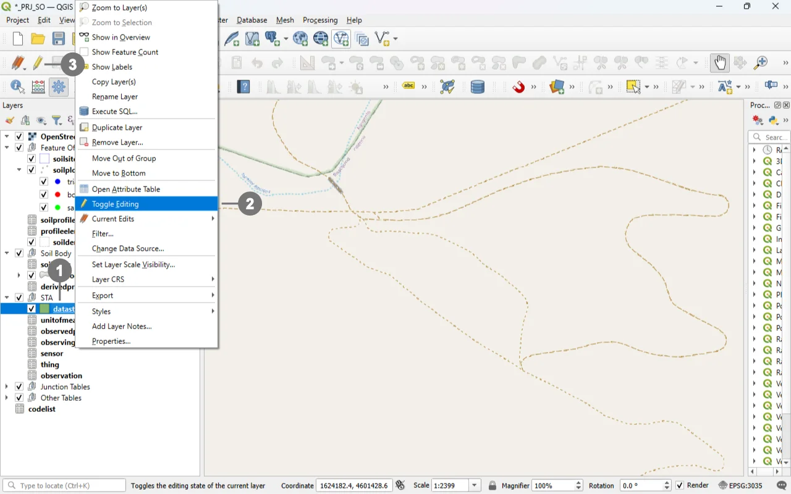
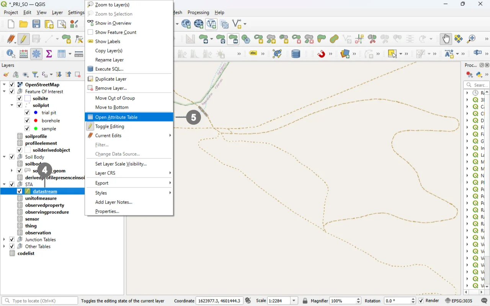
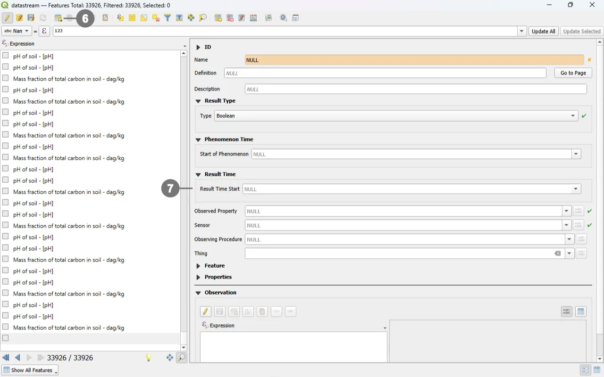

SoilWise Geopackage
Datastream Form
Open
To open the Datastream custom forms, go to the Layers panel, right‑click the datastream layer, and choose Open Attribute Table from the context menu.
Tip
For further information on the custom forms, consult the documents Customized Attribute Forms in QGIS and Navigating GeoPackage Tables via Forms
Edit

Alternatively, select only the “datastream” layer ① and click the “Toggle Editing” button ③ in the toolbar.

Right-click in the "Layers" panel on the "datastream", and from the menu, select "Open Attribute Table" ⑤

Use the widgets provided by the form to modify data.
For detailed information on how to initiate edit mode for a custom form, refer to the Editing Records Through a QGIS Form documentation.
Editing Datastream via Child Elements (QGIS Sub‑Forms)
Editing Datastream records through child elements (sub‑forms embedded in the parent form) is the most reliable and efficient workflow for your INSPIRE Soil GeoPackage. It keeps users in context, auto‑populates foreign keys, and mirrors database integrity rules at the point of entry.
Why “child‑form editing” is the best option for Datastream
Context‑aware data entry: Working inside the parent form (e.g. Soil Site, Soil Profile, Profile Element or Soil Derived Object) ensures the Datastream receives the correct parent keys without manual copying. QGIS relations and their forms are explicitly designed to connect and edit related tables in place.
Integrity by design: The QGIS relation editor widget exposes dedicated child‑layer controls and honors relationship cardinalities, minimizing orphan data and key mismatches. It includes built‑in actions for Add child feature and Save child edits.
Use the following buttons to manage child layers during data editing.
Toggle editing mode for child layer ① enables editing on the related (child) layer embedded in the form; once active, you can add/modify/delete child records directly from the parent record’s view.
Save child layer edit ② commits the pending edits for the child layer to the GeoPackage. Use this to persist changes without leaving the parent form.
Add child feature ③ creates a new child record pre‑linked to the current parent (relation fields are auto‑populated by the form’s relation widget), ensuring correct foreign keys and preventing orphan rows.
REQUIRED fields
id: primary key (auto-incrementing)name: TEXTtype: TEXT (constrained values)guid_sensor: TEXT (FK)guid_observedproperty: TEXT (FK)
ID Group

Fields
-
id- Primary AUTO_INCREMENT INTEGER PRIMARY KEY; it’s the required identifier for GeoPackage tables and is assigned automatically on insert. -
guid- Global identifier in UUID format, stored as text. The field is optional. It’s automatically managed via triggers.
Important
On opening, the ID group is collapsed: there is no need for manual editing, as both fields are system‑managed (the id by the SQLite engine and the guid by triggers), reducing errors and ensuring identifier consistency over time.
Result Type
The custom form dynamically adapts its layout and available fields based on the selected Result Type. ①
When a Result Type is chosen, the form automatically displays only the fields that are required or optional for that specific type, while hiding or disabling fields that are not allowed.
This behavior ensures a correct and consistent definition of the Result Type and prevents invalid configurations.
Each Result Type enforces a specific set of required, optional, and forbidden fields, as described below.
Important
For further details about the Result Type definition, validation rules, and related constraints, please refer to the documentation of the Datastream table.
Result Type: Boolean
Description
Used to represent binary values (true/false).
Forbidden fields
iduomcodespacevalue_minvalue_max
Result Type: Category
Description
Used to represent categorical or classified values defined within a controlled code list.
Required fields
codespace① The user can select a codespace from the list of codespaces already available in the system.
Forbidden fields
iduomvalue_minvalue_max
Important
For further information about codespaces and instructions on how to add them to the geopackage, please refer to the documentation of the Codelist table.
Result Type: Count
Description
Used to represent integer counts or occurrences.
Optional fields
value_min①value_max②
Forbidden fields
iduomcodespace
Additional constraints
- If both
value_minandvalue_maxare provided, then:value_maxmust be greater thanvalue_min
Result Type: Quantity
Description
Used to represent measurable quantities associated with a numeric value and a unit of measure.
Required fields
iduom(unit of measure) ① The widget allows users to select the available units of measure stored in the Geopackage.
Optional fields
value_min②value_max③
Forbidden fields
codespace
Important
Additional units of measure can be added to the system by inserting new records into the unitofmeasure table.
Observed Property - Sensor - Observing Procedure - Thing
The Relation Reference widgets for Observed Property, Sensor, Observing Procedure, and Thing reference the records stored in their respective tables.
Each dropdown list displays only the rows available in the corresponding Geopackage table, ensuring data consistency and referential integrity.
Mandatory and Optional Fields
- Observed Property: Required
- Sensor: Required
- Observing Procedure: Optional
- Thing: Optional
Observing Procedure Filtering Logic
The list of available Observing Procedures is dynamically filtered based on the selected Observed Property.
Warning
Validation Constraint
If the selected Observed Property – Observing Procedure key pair is not present in the
obsprocedure_obsdproperty table, the system will raise an error and prevent the insertion of the Datastream record.
Important
This filtering is performed according to the relationships defined between Observed Property and Observing Procedure in the
obsprocedure_obsdproperty table. Only Observing Procedures that are explicitly linked to the selected Observed Property will be available for selection.
Note
The Geopackage is distributed with a predefined set of GLOSIS Observed Property – Observing Procedure records,
including their relationships already defined in the obsprocedure_obsdproperty table.
Feature
A Datastream must be associated with one and only one parent Feature.
Among the four available Features, exactly one must be selected and must not be NULL:
- Soil Site
- Soil Profile
- Profile Element
- Soil Derived Object
Selecting more than one Feature or leaving all of them unset is not allowed and will result in an invalid Datastream definition.
Recommended Workflow
It is strongly recommended to create Datastreams through the child forms of the Features rather than directly from the Datastream table, as this ensures that the Datastream automatically receives the correct parent keys without manual selection.
Constraints
- Type set:
type ∈ {Quantity, Category, Boolean, Count, Text}(CHECK). - Type combinations: exclusive requirements among
code_unitofmeasure,codespace,value_min,value_maxbytype(CHECK). - Bounds order: if both bounds set,
value_min <= value_max(CHECK + BEFORE INSERT/UPDATE). - Count bounds as integers: when
type='Count', provided bounds must be numerically integral (BEFORE INSERT/UPDATE). - Codespace membership: if
codespaceis not NULL, it must exist incodelist(id)forcollection='Category'(BEFORE INSERT/UPDATE). - Procedure–Property pairing:
(guid_observingprocedure, guid_observedproperty)must exist inobsprocedure_obsdpropertyon INSERT/UPDATE (BEFORE triggers). - Definition/Codespace URI hygiene: syntax checks on
definitionandcodespace(CHECK). - Phenomenon time propagation: AFTER triggers keep
phenomenontime_*equal to MIN/MAX across linked observations. - Bounds tightening protection: updating
value_min/maxis aborted if any existing observation would fall outside the new bounds (BEFORE UPDATE).
Attribute Reference
For an overview of the attributes used in the custom form, refer to the soilsite table documentation. It provides the key definitions and data types needed to correctly interpret the fields and configure the form within the data model.
Save
For a more comprehensive overview of form‑saving workflows, refer to the detailed documentation in Saving Edits in QGIS Forms.